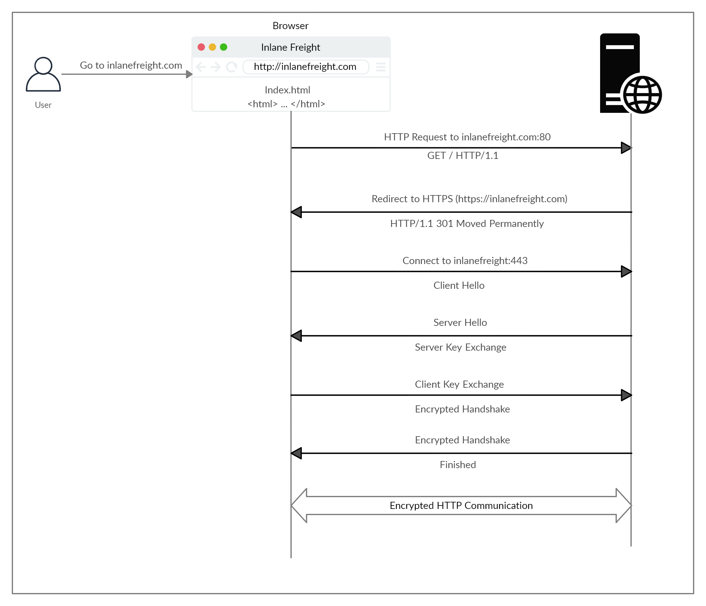

80 / 443 / 8080 - HTTP(S)
HTTPS Flow

| Method | Description |
|---|---|
GET |
Requests a specific resource. Additional data can be passed to the server via query strings in the URL (e.g. ?param=value). |
POST |
Sends data to the server. It can handle multiple types of input, such as text, PDFs, and other forms of binary data. This data is appended in the request body present after the headers. The POST method is commonly used when sending information (e.g. forms/logins) or uploading data to a website, such as images or documents. |
HEAD |
Requests the headers that would be returned if a GET request was made to the server. It doesn't return the request body and is usually made to check the response length before downloading resources. |
PUT |
Creates new resources on the server. Allowing this method without proper controls can lead to uploading malicious resources. |
DELETE |
Deletes an existing resource on the webserver. If not properly secured, can lead to Denial of Service (DoS) by deleting critical files on the web server. |
OPTIONS |
Returns information about the server, such as the methods accepted by it. |
PATCH |
Applies partial modifications to the resource at the specified location. |
https://owasp.org/www-project-web-security-testing-guide/stable/
https://karol-mazurek95.medium.com/
https://www.acunetix.com/blog/articles/web-shells-101-using-php-introduction-web-shells-part-2/
https://www.synacktiv.com/en/publications/persistent-php-payloads-in-pngs-how-to-inject-php-code-in-an-image-and-keep-it-there
https://github.com/bastyn/OSWA/
http://www.xssgame.com/
- Developer Tools > Debugger > Prettyfier on Firefox {}
- Inspector > search for hidden fields
- sitemap.xml, robots.txt, .svn, .DS_STORE, .git
# Source Code
Inspect > Inspector > change parameters, check all sections on the right to modify sth
Debugger > open .js file > set a breakpoint clicking on the line
# Content Discovery
Favicon > download favicon.ico, check MD5 and compare it with https://wiki.owasp.org/index.php/OWASP_favicon_database to get the framework which migth be in use.
# HTTP Headers
curl -I $URL/$PATH
REST API endpoints
# pattern is a file with this content:
{GOBUSTER}/v1
{GOBUSTER}/v2
gobuster ... -p pattern
# if we find sth like /users/v1, we inspect with curl and if there is a user like admin for example, we fuzz again
ffuf -u http://users/v1/admin/FUZZ
# we can try to log in using post method by providing a JSON token
curl -X POST -d '{"username":"admin","password":"password"}' -H 'Content-Type: application/json' http:$IP/users/v1/login
# If we can register a new user, we login and get a token
# Then we can abuse the admin property set True to overwrite admin's password:
curl -X PUT http://$IP/users/v1/admin/password -H 'Content-Type: application/json' -H 'Authorization: OAuth $JWT_TOKEN' -d '{"password":"pwn3d"}'
Automatic web recon
https://github.com/thewhiteh4t/FinalRecon
Learn status codes
.ds_store
The DS_Store, or Desktop Services Store is a hidden file use by Mac OS X. This file is used to store various attributes about the folder such as icons or sub-folder names. This file can reveal sensitive information such as the folder structure and contained files.
https://exploit-notes.hdks.org/exploit/web/method/web-content-discovery/#parsing-.ds_store
https://github.com/gehaxelt/Python-dsstore
https://github.com/lijiejie/ds_store_exp
BEST TOOL: https://github.com/Keramas/DS_Walk
TLS/SSL
https://www.ssllabs.com/ssltest/ Click "Do not show results on the boards"
sslscan
https://www.kali.org/tools/sslyze/
Checklist
https://pentestbook.six2dez.com/others/web-checklist
Nginx, Tomcat
https://nginx.org/en/docs/
# Search for modules and find WebDAV
https://nginx.org/en/docs/http/ngx_http_dav_module.html
# Privesc -> change listening port for every attempt
https://darrenmartynie.wordpress.com/2021/10/25/zimbra-nginx-local-root-exploit/
############## NGINX MODULES
command on
Google "whatever" Github
If it is a module, check /usr/share/nginx/modules -> strings ..._module.so | grep run # grep run or whatever keyword we may use
https://book.hacktricks.xyz/network-services-pentesting/pentesting-web/nginx#alias-lfi-misconfiguration
Check some type of URL parsing bug (/..;/)
Check also /etc/nginx/sites-enabled/default to find root webservers
Basic Auth
https://portswigger.net/web-security/authentication/password-based
Log4j / Log4Shell
https://www.hackthebox.com/blog/whats-going-on-with-log4j-exploitation
https://github.com/gkhns/Unified-HTB-Tier-2-
https://github.com/veracode-research/rogue-jndi
Certificates, mutual authentication
https://book.hacktricks.xyz/crypto-and-stego/certificates
https://tecadmin.net/extract-private-key-and-certificate-files-from-pfx-file/
https://github.com/crackpkcs12/crackpkcs12
$ pfx2john legacyy_dev_auth.pfx > cert.john
└─$ john --wordlist=/usr/share/wordlists/rockyou.txt cert.john --format=pfx
# Get certificate info
openssl pkcs12 -in legacyy_dev_auth.pfx -info
# Export private key
└─$ openssl pkcs12 -in legacyy_dev_auth.pfx -nocerts -out priv-key.pem -nodes
Enter Import Password:
# Export certificate key
└─$ openssl pkcs12 -in legacyy_dev_auth.pfx -nokeys -out certificate-key.pem 1 ⨯
Enter Import Password:
# Now we edit certificate-key.pem and delete all data before -----BEGIN CERTIFICATE
# Check TLS/SSL certificate of the webserver site (note Cipher is ECDHE-RSA-AES128-GCM-SHA256 to know if it is sha256)
openssl s_client -connect 10.10.10.0:443
# If we have a .key and the output info from above, we can create a certificate
openssl req -x509 -new -nodes -key ca.key -sha256 -days 1024 -out cert.pem
# Export the certificat to PKCS12 (.p12) to be able to import it on browsers
openssl pkcs12 -export -in cert.pem -inkey ca.key -out cert.p12
# -----------EXPLANATION
CA Private Key - Kept Offline, used to sign stuff
CA Public Key - Kept everywhere, everyone need this
Website Private Key - Kept on website
Website Public Key - Distributed to users
user private key - Stored in the web browser - |
| -> PFX
user public key -What is sent------------------|
Go to Server Certificates > View Certificate > Export as .crt or better, use openssl s_client $IP:443
# Verify private key ca.key is the one of the server certificate ca.crt
openssl pkey -in ca.key -pubout
openssl x509 -in ca.crt -pubkey -noout
# Generate client key
openssl genrsa -out client.key 4096
# Create Certificate Signing Request (CRT)
openssl req -new -key client.key -out client.csr
# Sign the .crt
openssl x509 -req -in client.csr -CA ca.crt -CAkey ca.key -set_serial 22 -extensions client -days 1000 -outform PEM -out client.cer
# Export the signed certificate as P12 so browsers can import it
openssl pkcs12 -export -inkey client.key -in client.cer -out client.p12
# If we want to know info on the certificate
openssl pkcs12 -info -in client.p12
# Now go to Firefox > Certificates > Authorities > import ca.crt
# Then go to My Certificates > import client.p12
# Finally to refresh, push Ctrl + Shift + R
NOTE: This part could be a bit finicky. If the page doesn’t prompt for the certificate on reload, try things like restarting the browser, clearing the cache, and untrusting the site (clicking on the padlock, then “connection not secure”, and then “Remove Exception”)
# We could check if our client's certificate goes to our server
openssl verify -verbose -CAfile ca.crt client.cer
################ SIMPLER WAY
openssl req -x509 -new -nodes -key ca.key -sha256 -days 1024 -out client.pem
openssl pkcs12 -export -in client.pem -inkey ca.key -out client.p12
# ----------------OTHER COMMANDS
# Generate CA (Private Key)
openssl genrsa -aes256 -out ca.key 4096
# Create public cert (CA Public Key)
openssl req -new -x509 -days 365 -key ca.key -out ca.crt
# Generate Website Private Key and CRS (Certificate Signing Request)
openssl req -newkey rsa:2048 -nodes -keyout server.key -out server.csr
# Sign that Webs Private Key (Generate Website Public Key)
openssl x509 -req -days 365 -in server.csr -CA ca.crt -CAkey ca.key -set_serial 01 -out server.crt
# User Private Key
openssl req -newkey rsa:2048 -nodes -keyout user.key -out user.csr
# Sign User Private Key (Generate User Public Key)
openssl x509 -req -days 365 -in user.csr -CA ca.crt -CAkey ca.key -set_serial 02 -out user.crt
# We can copy server* files to the SSL folders of the webserver, (certs/ and private/
# We need ca.crt (CA Public Key) to be added to our browser > Import cert > Authorities > Trust this CA
# To require client cert from Apache, on apache $server.conf we have an option SSLVerifyClient Required
# Now w need to create PFX (another option is .p12) and we import it as Your Certificates
openssl pkcs12 -export -out user.pfx -inkey user.key -in user.crt
# ------------MISC
# We can compare Compare certificates to find same public key
openssl pkey -in ca.key -pubout #CA
openssl x509 -in server.crt -pubkey -noout #downloaded from the webserver w/ Firefox/Chrome